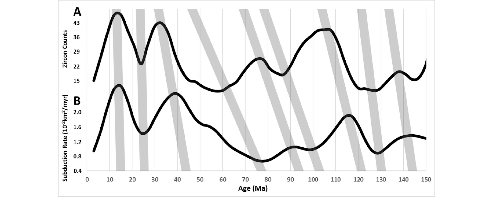

Quantifying the evolution of the continental and oceanic crust

Resumo em Português
Uma melhor compreensão de como as idades dos zircões variam ao longo do tempo requer análises estatísticas sofisticadas das idades isotópicas de U/Pb, tanto de rochas matrizes quanto de zircões detríticos. Os pesquisadores geralmente interpretam a variação na distribuição de idades dos zircões preservados como representativa de períodos de produção intensificada de crosta continental, juntamente com a reciclagem de crosta mais antiga. No entanto, estimativas de diversos bancos de dados globais mostram variações consideráveis, o que sugere a necessidade de padronização dos métodos de amostragem e análise estatística. A amostragem em grade e a amostragem de sedimentos modernos são propostas para o desenvolvimento futuro de bancos de dados, com o objetivo de produzir estimativas estatisticamente consistentes das distribuições de idade dos zircões em quatro escalas: global, continental, regional e intra-bacia. A aplicação desses métodos de amostragem e análises estatísticas detalhadas (séries temporais, espectrais, de correlação e ajustes polinomiais e exponenciais) indica possíveis relações entre a formação de crosta continental e oceânica, eventos de grandes províncias ígneas (LIPs), o ciclo de supercontinentes, a polaridade geomagnética e a intensidade geomagnética. Os resultados mostram uma forte correlação entre os espectros de idade do zircão e das Grandes Províncias Ígneas (LIPs), com picos principais em 2700, 2500–2400, 2200, 1900–1850, 1650–1600, 1100, 800, 600 e 250 Ma, com uma ciclicidade pronunciada em ambos os eventos de cerca de 274 milhões de anos. A análise de correlação cruzada indica que os picos das LIPs precedem os picos do zircão em 10–40 milhões de anos. Além disso, os picos de idade da crosta oceânica em 170–155, 135–125, 115–100, 80–70, 55–45 e 33–15 Ma correspondem aos picos de idade do zircão e das LIPs. A análise de correlação também indica uma ligação entre os eventos de zircão-LIP e a frequência de reversão geomagnética, bem como uma possível ligação entre a polaridade geomagnética e a paleointensidade. Uma melhor quantificação das medições geológicas e geoquímicas deverá ajudar a resolver questões persistentes sobre por que os registros de séries temporais da crosta continental e oceânica, o ciclo dos supercontinentes e os eventos globais de LIP indicam uma evolução em episódios quase periódicos.